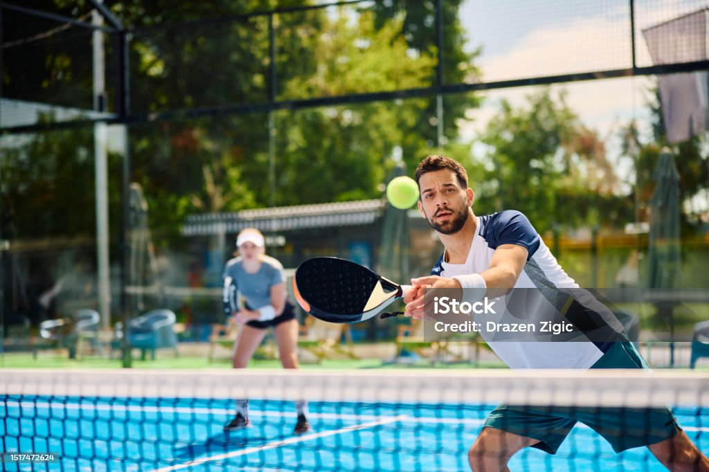

Selector aplicado: Tipo (h2) y Clase (.subtitulo)
El Pádel, uno de mis deportes favoritos 🎾
El pádel es un deporte que combina agilidad, estrategia y trabajo en equipo. Comencé a jugar pádel con mi familia y me encanta porque no solo es ejercicio, también hay que pensar y planear cada jugada.
Selector aplicado: Universal (*)

Selector aplicado: Descendientes (ul.beneficios li)
Beneficios del pádel
- Mejora la condición física.
- Fomenta el trabajo en equipo.
- Es divertido y dinámico.
- Ayuda a liberar estrés.
Selector aplicado: Lista (h2, h3, blockquote)
"El pádel no es solo un deporte, es una forma de disfrutar la vida en compañía."
Selector aplicado: Hermanos adyacente (+) y general (~)
Un partido de pádel en acción
Yo soy el párrafo hermano adyacente del h3.
Yo soy hermano general, sigo estando después del h3.
Posiciones básicas en pádel
| Posición | Descripción |
|---|---|
| Fondo | Defiende desde la parte trasera de la pista. |
| Red | Ataca cerca de la red para presionar al rival. |